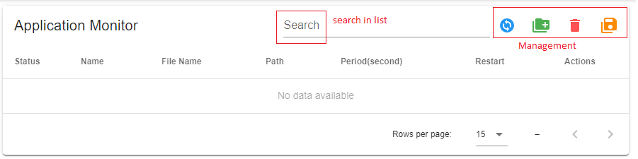
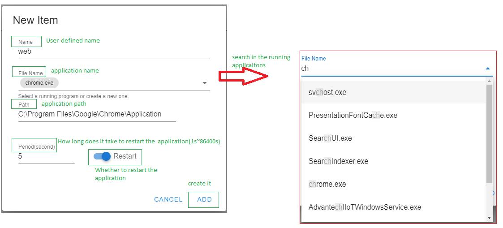
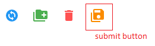
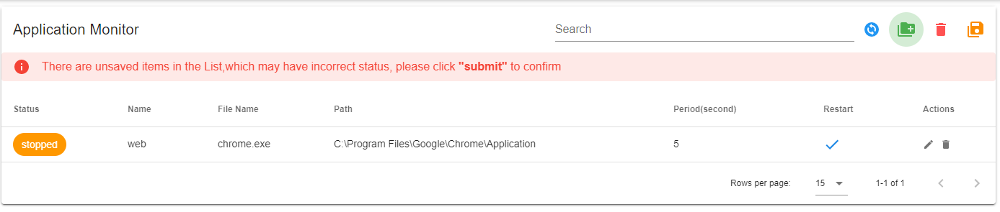
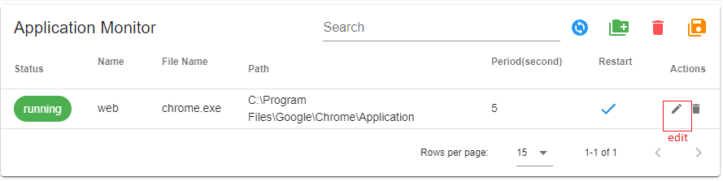
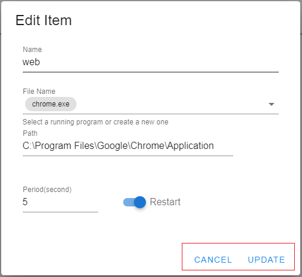
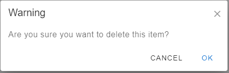

Application Monitor
The Application Monitor allows user to monitor processes and restart automatically.

Add new one to list
Click "Add" button to create a new one to the list
Fill in the content. The user can search for the currently running process from "File Name" to add or fill in relevant information to add .

After adding the required applications, click the "submit" button to join the monitoring. If the "submit" button is not clicked, the warning message will appear.


Edit one of the list
Click the "edit icon" under the "ACTION" item .

User can update content manually , then click "UPDATE" to save this one or click "CANCEL" to return to applicaion monitor main page.After completing these operations, click the "Submit" button to rejoin the monitoring.

Delete one of the list
Click the "delete icon" under the "ACTION" item .
Click "OK" to delete it or click "CANCEL" to return to applicaion monitor main page .After completing these operations, click the "Submit" button to cancel joining the monitoring.

Reload all applications in the list
click the "Reload" button to get the latest status and settings of the applications in the list
Delete all applications in the list
click the "Delete All" button to delete all of the applications in the list.